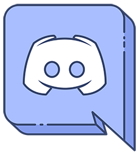
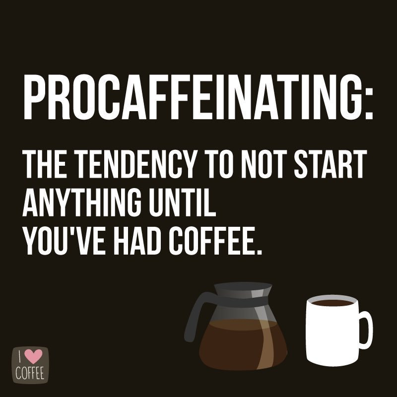

Min historia
Jag föddes år 1999 i Lovisa, Finland. Vid denna tid skaffade Linus Torvalds fotfäste med sitt Linux-operativsystem, euron uppfanns och den sjätte biljonte människan föddes. Torvalds var egentligen inte en inspiration för mitt namn, men korrelationen verkar ha varit ett omen som du snart får se. Men nu rusar mina tankar iväg, låt oss backa tillbaka lite.
Som barn var jag alltid intresserad av hur saker och ting fungerade. Jag läste massor med böcker som förklarade hur maskiner och fordon fungerande. Jag brukade rita bilder med en pedantisk uppmärksamhet för interna detaljer. Ironiskt nog har jag alltid varit en usel tecknare, men ritande av maskiners insidor var något jag tyckte om.

Jag växte upp med Windows Vista-operativsystemet båda hemma i skolan. Det var uselt att använda och några gånger ville det inte fungera överhuvudtaget. Dessutom blev jag mycket förbryllad när vissa webbspel funkade på en Windows XP-dator på min pappas firma, men inte hemma. Senare insåg jag att orsaken till detta var den tidsenliga XP-Vista-apartheiden, men då var frågan så enkel som "Varför funger detta här men inte där?".
Spel har också alltid varit mig nära. Min familj hade en Nintendo 64 med Super Mario 64, som jag brukade spela alltid när jag kunde. Tyvärr kom jag aldrig igenom spelet och konsolen såldes till missnöje av både mig och min familj nu. Vi ägde också en Wii och jag brukade spela motionsspelen som kom med den med min bror i timtal. Den konsolen såldes också. Misstag gjordes verkligen när jag var ung och naiv...
När jag började i högstadiet började jag experimentera med datorer utöver spelande. Nyfikenheten för hur saker fungerade från barndomen gjorde ett återkommande, vilket ledde till försök-misstag-cykelns börjande. Jag deltog i en kort IT-kurs i högstadiet, vilket förvisso inte gav mig så mycket, men lade vägen för det jag vet idag. Vid denna tid ville jag bli en engelskalärare. Min engelska hade växt mycket stark då min syn hade försämrats, och när den blev så pass dålig att jag inte såg textningarna på TV för engelskspråkiga program som Mythbusters, var jag tvungen att lyssna i stället.
När tiden framskred, började jag lära mig allt med om datorer och problemlösning med dem. Förrän jag kunde inse det, blev det tydligt att jag hade blivit den person som man alltid frågar om något teknikrelaterat i min högstadieklass. Detta har, lustigt nog, inte ändrat ett dugg och jag är den personen än idag. Senaste gången jag konsulterades över dylika ärenden var på dagen jag skriver detta, faktiskt.
I april 2016, medan jag gick i gymnasiet, kontaktade en nätvän från Google+ (Jo, jag använde det en gång i tiden) mig och frågade om jag var intresserad att hjälpa med ett projekt han höll på med. Det projektet blev, numera avslutade, Minecraft-servern KarpaloCraft. I dessa tider höll chatprogrammet Discord att bli en stor grej för spelare. Eftersom jag hade hört om programmet, föreslog jag att vi skulle använda det som en samlingsplats för vårt samfund.
Snart blev jag medveten om att man kunde använda robotar i programmet, så jag sökte upp ett par. Robotarna jag höll i bruk för KarpaloCraft var mitt första programmeringsprojekt och en introduktion till Open Source Software. Jag provade WildBeast och en musikrobot i Python. Jag översatte också robotarna till finska med en nätvän utan någon erfarenhet i programmering (Vi kunde nätt och jämnt skilja på en sträng och en deklaration), och fastän det var ett kaos, hade vi mycket nöje av att göra det över en sommar.

Detta blev också min introduktion till programmering. WildBeast var skrivet i JavaScript och jag började lära mig programmeringsspråket. Under hösten 2016 öppnade utvecklarna av WildBeast positioner för nya medlemmar, och jag bestämde mig för att försöka. Jag kom in och min första uppgift blev att skriva dokumentationnssidor för systemet. Det gjorde jag och fortsatte därefter med att utveckla WildBeast. Idag är jag ledande teknisk skribent och programutvecklare för TheSharks (Organisationen som bildades från utvecklarna av WildBeast). Det är lustigt att tänka att det hela började från mitt översättande av ett datorprogram, och här är jag, som en egentlig del av teamet.
När jag började inneha mera kunskap, fick jag min fot emellan dörren för lite viktigare projekt. Under vintern 2016-2017 programmerade jag själv eller så deltog jag i utvecklingen av robotar för olika YouTuber- och streamer-Discords, en grupp som hade upptäckt Discord och behövde automatiserad moderation. Jag arbetade för innehållsproducenter som Muselk, Overwatch Central och Max Box genom att programmera robotar för dem.

När dessa upplevelser kom emot, började jag känna ett behov för att göra något annat än att vara en engelskalärare i mitt framtida arbetsliv. Programmering var så intressant att jag eventuellt accepterade verkligheten: Jag ville inte längre vara en lärare, jag ville bli programutvecklare. Eftersom jag var halvvägs igenom gymnasiet med studierna insatta på humanistiska studier istället för logisk-matematiska, förutspådde jag att universitet inte skulle gå. Men yrkeshögskola skulle vara ett alternativ, tänkte jag. Jag bestämde att jag skulle bli programutvecklare en dag - på ett sätt eller annat.
Under våren-hösten 2017 utvecklade jag två Discord-chatrobotar för allmänheten med min nätvän Curtis från USA. Logger och Swordfish såg litet bruk men var viktiga för mig då de fick mig från att vara en nybörjare till verkligen kunnande JavaScriptare och lärde mig allmänna programmeringsparadigm. Trots detta, efter sommaren tyckte jag att jag hade kommit så långt jag kunde komma med Discord och ville göra något nytt.
Som tur hade jag arbetat på min pappas tryckfirma under sommaren som systemadministrator och IT-tekniker, där jag hade byggt om hela nätverkstopologin och utfört många infrastrukturuppgraderingar. Mot slutet av sommaren gavs jag ett program från det tidiga 2000-talet som inte hade uppdaterats sen dess, och i uppgift att bygga om programmet för modera system. Detta har varit min introduktion till frontend- och API-centrerad programutveckling, i kontrast till de traditionella kommandotolksprogrammen jag hade skrivit redan länge.

Och här sitter jag då idag, framför en datorskärm, drickande kaffe från min GitHub-mugg och skriver min egna berättelse. Hur ser framtiden ut, då? Inom studier är yrkeshögskola och ICT-ingenjör inom programmering det som står på horisonten. Inom programmering har jag planerat att lära mig ett nytt programmeringsspråk nästa vår då studentskrivningarna är över och jag har överlopps tid. I siktet ligger Java och kanske även Python där med det samma. Betalt arbete inom programmerin är något som jag gör redan nu och jag söker efter möjligheter att utvidga inom det fältet just nu.
Trots allt, i orden av Jean Sibelius: "Jag är en kompositör, icke en spåman". Vem vet vad som ligger framöver - jag vet verkligen inte. I retrospekt har jag redan åstadkommit mycket för att bara vara 18 år gammal. Ett faktum är att det fortfarande finns massor att se och göra. Livet är ändligt, men möjligheterna är inte, inte så?
Terminalprocessen avslutades med en avslutningskod som inte var noll: Kaffet tog slut, programmeraren gick för att söka mera.
